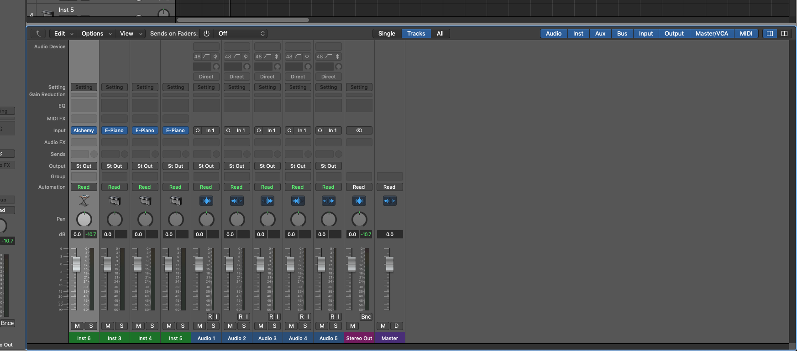

7. Mixer
1) if you press this three line button
2) (Shortcut key) = alphabet 'X'
2) (Shortcut key) = alphabet 'X'

1) You can see this Mixer!
2) You can control all tracks in this mixer
3) All inspectors is gathered in this place,
so you don't need to see every track edit window
4) You can control instruments, audio FX, volume, panning, solo, mono...
everythins in here
2) You can control all tracks in this mixer
3) All inspectors is gathered in this place,
so you don't need to see every track edit window
4) You can control instruments, audio FX, volume, panning, solo, mono...
everythins in here

*** Until now, It was an minimal explanation Logic pro X.
I hope you study an unknown part in youtube a little more
I hope you study an unknown part in youtube a little more